1004E10 engine, removed - remove cylinder head and oil sump for inspection - includes positioning on stand and removal
- Path
- Procedures > 10 ENGINE > 1004 ENGINE AND POWER UNIT > 1004E engine assembly inspection and repairs > 1004E10 engine, removed - remove cylinder head and oil sump for inspection - includes positioning on stand and removal
- Kind
- repair procedure (removal / refitting; the operation number is the code)
- Applies to
- all engines; all production periods
- Interactive page
- https://sloeber94.github.io/elrnDB-a147/en/#/3025985
Applies to: engines: 1.6 TS; all production periods
Proceed with the removal 1004D40 engine - position on stand and remove .
1. Adjust the automatic belt tensioner with a wrench to slacken the tension of the single drive belt.
2. Remove the single drive belt.
3. Undo the bolt (3a) and remove the fixed belt tensioner (3b) for the engine components single belt.
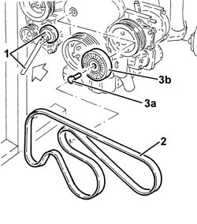
Applies to: engines: 1.6 TS; all production periods
1. Undo the bolts (1a) and remove the upper timing belt guard (1b).
2. Slacken the timing belt tensioner nut.
3. Remove the timing belt from the camshaft pullies.
4. Disconnect the electrical connection for the air conditioning compressor.
5. Undo the bolts (5a) and remove the air conditioner compressor (5b).
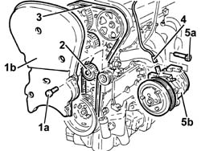
Applies to: engines: 1.6 TS; all production periods
1. Disconnect the coolant outlet pipe connection from the water-oil heat exchanger.
2. Undo the bolts (2a) and remove the air conditioner compressor mounting (2b).
3. Undo the bolt securing the exhaust manifold to the mounting bracket on the engine block.
4. Undo the nuts (4a) and remove the exhaust manifold (4b).
5. Undo the bolt (5a) and remove the oil dipstick (5b).
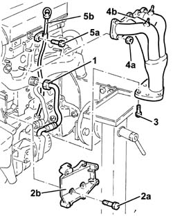
Applies to: engines: 1.6 TS; all production periods
1. Disconnect the intermediate connection on the coolant supply pipe to the water-oil heat exchanger.
2. Undo the bolts (2a) and nuts (2b) and remove the rigid coolant inlet pipe to the pump (2c).
3. Remove the seal.
4. Undo the bolts (4a) and remove the timing belt left side guard (4b).

Applies to: engines: 1.6 TS; all production periods
1. Undo the bolt (1a) and remove the power steering fluid reservoir mounting bracket (1b).
2. Undo the bolts (2a) and remove the timing belt right side protection (2b).

Applies to: engines: 1.6 TS; all production periods
1. Disconnect the electrical connection for the cam angle sensor.
 | Name | Connector |
|---|---|---|
1 | Timing sensor. |
2. Undo the bolts (2a) and move aside the power steering fluid reservoir (2b).
3. Disconnect the electrical connection for the rpm sensor.
| Name | Connector |
|---|---|---|
3 | RPM sensor |
4. Disconnect the electrical connection for the detonation sensor.
| Name | Connector |
|---|---|---|
4 | Detonation sensor - 1 |

Applies to: engines: 1.6 TS; all production periods
Disconnect the electrical wiring from the rpm and timing sensor and the knock sensor from the bands located under the air chamber.
1. Undo the bolts securing the mounting bracket to the air intake chamber.
2. Disconnect the electrical connections from the ignition coils and release the electrical wiring from the bands.
| Name | Connector |
|---|---|---|
2 | Ignition coil |
3. Disconnect the earth lead from the cylinder head.
4. Disconnect the high-tension leads (4a) from the spark plugs using the tool (4b).
 | Name | Country |
|---|---|---|
4b | Pliers | 1.820.636.000 |
5. Disconnect the oil vapour recovery pipe from the rocker cover.
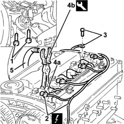
Applies to: engines: 1.6 TS; all production periods
1. Undo the bolts (1a) and remove the bracket (1b) complete with ignition coils and high-tension leads.
2. Undo the bolts (2a) and remove the tappet cover (2b) complete with seal.
3. Undo the bolts (3a) and remove the complete cylinder head (3b).
4. Remove the cylinder head gasket.
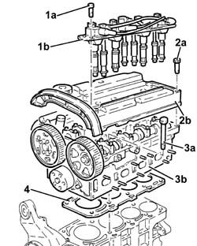
Applies to: engines: 1.6 TS; all production periods
Rotate the engine through 180° on the overhauling stand.
1. Undo the bolt connecting the crankcase sump to the intermediate shaft support.
2. Undo the front and rear bolts (2a) for the crankcase sump using the tool (2b).
| Name | Country |
|---|---|---|
2b | Key | 1.822.145.000 |
3. Undo the side bolts (3a) for the crankcase sump using the tool (3b).
| Name | Country |
|---|---|---|
3b | Key | 1.822.144.000 |
4. Remove the crankcase sump.

Applies to: engines: 2.0 TS; all production periods
Proceed with the removal 1004D40 engine - position on stand and remove .
1. Undo the bolts (1a) and the nut (1b) and remove the auxiliary drive belt protection (1c).
2. Use a spanner on the moving tensioner (2a) and remove the single drive belt (2b).
3. Remove the cap, undo the bolt (3a) and remove the single belt fixed tensioner (3b).
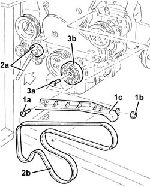
Applies to: engines: 2.0 TS; all production periods
1. Undo the bolts (1a) and remove the upper timing gear cover (1b).
2. Slacken the nut on the timing belt moving tensioner.
3. Release the timing drive belt from the driven pullies.
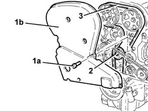
Applies to: engines: 2.0 TS; all production periods
Disconnect the electrical connection for the air conditioning compressor.
| Name | Connector |
|---|---|---|
- | Air conditioning compressor engagement electro-magnet |
1. Undo the bolts (1a) and remove the air conditioning compressor (1b).
2. Undo the bolts (2a) and remove the air conditioner compressor mounting (2b).
3. Undo the connector (3a) and disconnect the coolant outlet pipe from the engine oil heat exchanger on the side of the water pump rigid inlet pipe.
4. Undo the nuts (4a) and remove the exhaust manifold (4b).
5. Undo the bolt (5a) and remove the oil dipstick (5b).
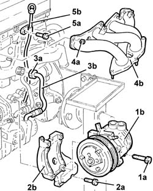
Applies to: engines: 2.0 TS; all production periods
1. Disconnect the flexible pipe from the rigid pipe carrying coolant to the engine oil heat exchanger.
2. Undo the bolt (2a) and the nut (2b) and remove the wter pump rigid inlet pipe mounting bracket (2c).
3. Remove the exhaust manifold gasket.
4. Undo the bolts (4a) and remove the coolant inlet rigid pipe to the water pump (4b).
Remove the gasket.
5. Undo the bolts (5a) and remove the left side protective timing cover (5b).
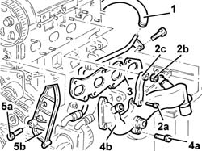
Applies to: engines: 2.0 TS; all production periods
1. Disconnect the electrical connection for the cam angle sensor.
| Name | Connector |
|---|---|---|
1 | Timing sensor. |
2. Undo the bolts (2a) and fixing the power steering fluid reservoir (2b) and move it.
3. Undo the bolt (3a) and remove the power assisted steering fluid reservoir mounting bracket (3b).
4. Undo the bolts (4a) and remove the right side protective timing cover (4b).
5. Disconnect the electrical connection for the rpm sensor.
| Name | Connector |
|---|---|---|
5 | RPM sensor |
6. Disconnect the electrical connection for the detonation sensor.
| Name | Connector |
|---|---|---|
6 | Detonation sensor - 1 |
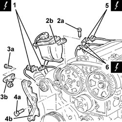
Applies to: engines: 2.0 TS; all production periods
Disconnect the electrical wiring from the rpm and the knock sensor from the bands located under the air chamber.
1. Undo the bolt fixing the mounting bracket to the modular intake manifold.
2. Disconnect the electrical connections from the ignition coils and release the wiring from the fixings.
| Name | Connector |
|---|---|---|
2 | Ignition coil |
3. Undo the bolt (3a) and disconnect the earth lead (3b) from the ignition coils support plate.
| Name | Connector |
|---|---|---|
3b | Earth on engine |
4. Disconnect the covers for the high tension leads (4a) from the spark plugs using the tool (4b).
| Name | Country |
|---|---|---|
4b | Pliers | 1.820.636.000 |
5. Remove the oil vapour recovery pipe from the tappet cover.
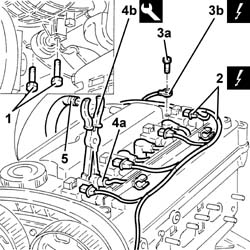
Applies to: engines: 2.0 TS; all production periods
1. Undo the bolts fixing the ignition coil support plate.
2. Pull the plate (2a), complete with ignition coils (2b), upwards.
3. Undo the bolts (3a) and remove the tappet cover (3b), complete with gasket.
4. Undo the bolts (4a) and remove the complete cylinder head (4b).
5. Remove the cylinder head gasket.
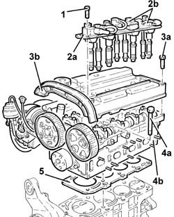
Applies to: engines: 2.0 TS; all production periods
Rotate the engine through 180° on the overhauling stand.
1. Undo the bolts (1a) and remove the engine components drive pulley (1b).
2. Undo the bolts (2a) and rmeove the lower timing cover (2b).
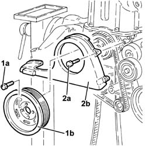
Applies to: engines: 2.0 TS; all production periods
1. Undo the bolt fixing the crankcase sump to the support on the engine for the reaction rod.
2. Undo the front and rear bolts (2a) for the crankcase sump using the tool (2b).
| Name | Country |
|---|---|---|
2b | Key | 1.822.145.000 |
3. Undo the side bolts (3a) for the crankcase sump using the tool (3b).
| Name | Country |
|---|---|---|
3b | Key | 1.822.144.000 |
4. Cut the crankcase sump sealant using the tool.
| Name | Country |
|---|---|---|
4 | Blade | 1.870.718.000 |
5. Remove the crankcase sump.
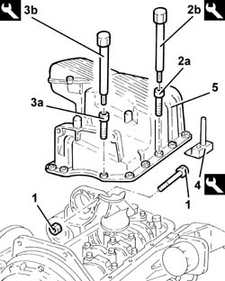
Applies to: engines: 3.2 V6; all production periods
Proceed with removal 1004D40 engine - position on stand and remove .
1. Open the electrical connections box cover.
2. Disconnect the electrical connection for the detonation sensor, timing side.
| Name | Connector |
|---|---|---|
2 | Detonation sensor - 1 |
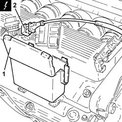
Applies to: engines: 3.2 V6; all production periods
1. Loosen the bands fixing the inlet ducts to the air chamber.
2. Loosen the band securing the engine oil vapour recovery pipe to the air chamber.
3. Disconnect the electrical connection from the throttle body integrated with the D.V.L.
| Name | Connector |
|---|---|---|
3 | Throttle body actuator |
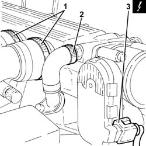
Applies to: engines: 3.2 V6; all production periods
1. Undo the fixing bolt (1a) and disconnect the earth lead (1b) from the air capacity chamber.
| Name | Connector |
|---|---|---|
1b | Earth on engine |
2. Undo the bolt fixing the reinforcement strut to the support on the engine for the reaction rod.
3. Undo the bolts (3a) and remove the air chamber assembly (3b).
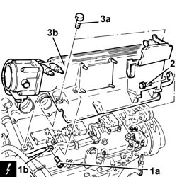
Applies to: engines: 3.2 V6; all production periods
1. Undo the bolts (1a) and remove the intake pipes (1b) complete with hoses (1c).
2. Remove gaskets.
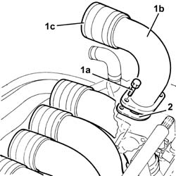
Applies to: engines: 3.2 V6; all production periods
1. Disconnect the electrical connections from the right cylinder head injectors.
| Name | Connector |
|---|---|---|
1 | Injector |
2. Disconnect the electrical connections from the right cylinder head ignition coils.
| Name | Connector |
|---|---|---|
2 | Ignition coil |
3. Undo the bolts (3a) and move the electrical wiring (3b) aside.
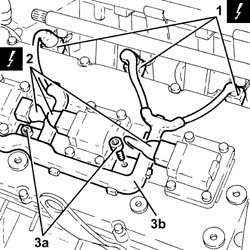
Applies to: engines: 3.2 V6; all production periods
1. Undo the bolt (1a) and release the cam angle sensor (1b) from its housing.
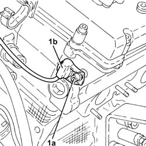
Applies to: engines: 3.2 V6; all production periods
1. Undo the bolts (1a) and remove the ignition coils (1b) from the right cylinder head.
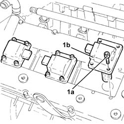
Applies to: engines: 3.2 V6; all production periods
1. Disconnect the electrical connection from the coolant temperature sensor.
| Name | Connector |
|---|---|---|
1 | Engine temperature sender unit |
2. Open the electrical connections box cover.
3. Release the electrical connections and the wiring from the connector box.
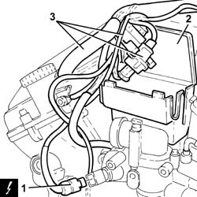
Applies to: engines: 3.2 V6; all production periods
1. Undo the bolts (1a) and remove the thermostat (1b) complete with connector box (1c).
2. Remove the adaptor.
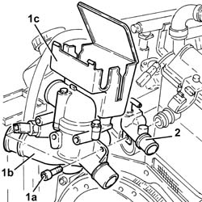
Applies to: engines: 3.2 V6; all production periods
1. Disconnect the electrical connection for the knock sensor flywheel side.
| Name | Connector |
|---|---|---|
1 | Knock sensor - 2 |
2. Disconnect the electrical connection for the rpm sensor.
| Name | Connector |
|---|---|---|
2 | RPM sensor |
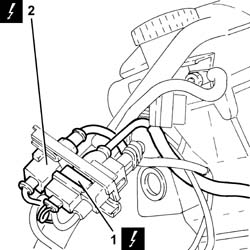
Applies to: engines: 3.2 V6; all production periods
1. Undo nut (1a) and disconnect earth lead (1b) from the left cylinder head.
| Name | Connector |
|---|---|---|
1b | Earth on engine |
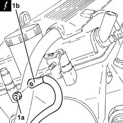
Applies to: engines: 3.2 V6; all production periods
1. Undo the bolts (1a) and remove the left cylinder head ignition coils cover (1b).
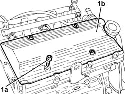
Applies to: engines: 3.2 V6; all production periods
1. Disconnect the electrical connections from the left cylinder head injectors.
| Name | Connector |
|---|---|---|
1 | Injector |
2. Disconnect the electrical connections from the left cylinder head ignition coils.
| Name | Connector |
|---|---|---|
2 | Ignition coil |
3. Undo the bolts (3a) and move the electrical wiring (3b) aside.
4. Remove the engine wiring.
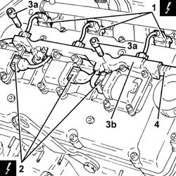
Applies to: engines: 3.2 V6; all production periods
1. Undo the bolts (1a) and remove the ignition coils (1b) from the left cylinder head.
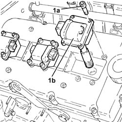
Applies to: engines: 3.2 V6; all production periods
1. Disconnect the rapid connector for the fuel manifold pipes.
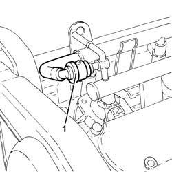
Applies to: engines: 3.2 V6; all production periods
1. Undo the bolts (1a) and remove the upper protective timing cover (1b).
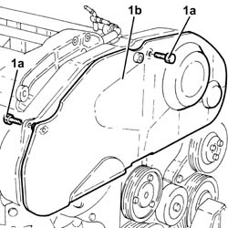
Applies to: engines: 3.2 V6; all production periods
1. Undo the bolts (1a) and remove the lower protective timing covers (1b).
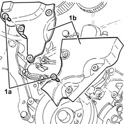
Applies to: engines: 3.2 V6; all production periods
1. Loosen the bolts fixing the timing belt moving tensioner.
2. Release the timing drive belt from the driven pullies.
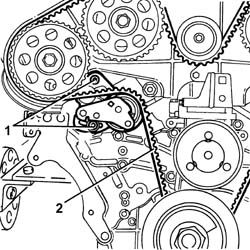
Applies to: engines: 3.2 V6; all production periods
1. Undo the bolt fixing the left rear timing belt protective cover to the right cylinder head.
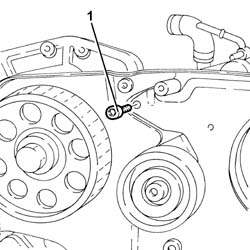
Applies to: engines: 3.2 V6; all production periods
1. Undo the bolts (1a), the bolt (1b) and remove the bracket (1c).
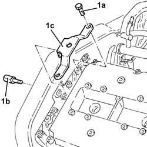
Applies to: engines: 3.2 V6; all production periods
1. Undo the bolt fixing the power assisted steering pump.
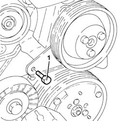
Applies to: engines: 3.2 V6; all production periods
1. Undo the bolts (1a) and remove the tappet cover for the left cylinder head (1b), complete with gasket.
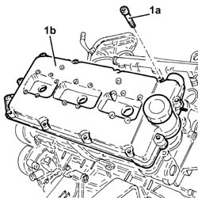
Applies to: engines: 3.2 V6; all production periods
1. Undo the bolts (1a) fixing the driven pullies using the tool (1b) for counter-torque.
| Name | Country |
|---|---|---|
1b | Counter-torque | 1.822.146.000 |
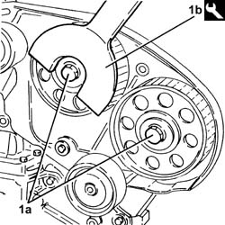
Applies to: engines: 3.2 V6; all production periods
1. Remove the driven pullies (1a) using the tool (1b).
| Name | Country |
|---|---|---|
1b | Extractor | 1.860.954.001 |
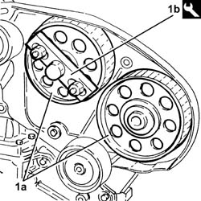
Applies to: engines: 3.2 V6; all production periods
1. Undo the bolts (1a) and remove the timing belt fixed tensioners (1b).
2. Undo the bolts (2a) and remove the left rear protective timing cover (2b).
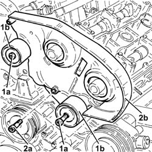
Applies to: engines: 3.2 V6; all production periods
1. Undo the nuts (1a) fixing the left cylinder head using the tool (1b).
| Name | Country |
|---|---|---|
1b | Spanner | 1.822.121.000 |
Remove the left cylinder head and gasket.
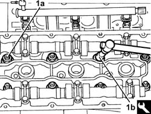
Applies to: engines: 3.2 V6; all production periods
1. Undo the bolts (1a) and remove the right rear protective timing cover (1b).
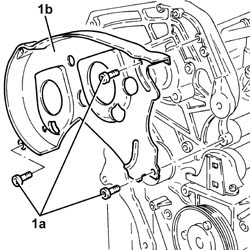
Applies to: engines: 3.2 V6; all production periods
1. Undo the bolts (1a) and remove the right cylinder head tappet cover (1b), complete with gasket.
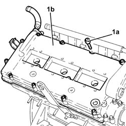
Applies to: engines: 3.2 V6; all production periods
1. Undo the bolts (1a) and remove the alternator bracket (1b).
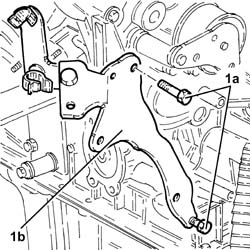
Applies to: engines: 3.2 V6; all production periods
1. Undo the nuts (1a) fixing the right cylinder head using the tool (1b).
| Name | Country |
|---|---|---|
1b | Spanner | 1.822.121.000 |
Remove the right cylinder head and gasket.
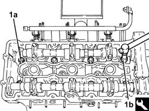
Applies to: engines: 3.2 V6; all production periods
1. Fit the cylinder/bore locks.
| Name | Country |
|---|---|---|
1 | Liner/bore holder | 1.820.279.000 |
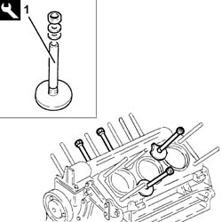
Applies to: engines: 3.2 V6; all production periods
Rotate the engine through 180° on the overhauling stand.
1. Undo the bolt (1a) and remove the fixed single drive belt tensioner (1b).
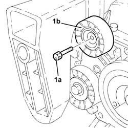
Applies to: engines: 3.2 V6; all production periods
1. Undo the bolts (1a) and remove the rpm sensor protection (1b).
2. Remove the rpm sensor complete with support.
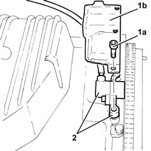
Applies to: engines: 3.2 V6; all production periods
1. Undo the bolts fixing the engine oil sump.
2. Use the tool to cut the crankcase sump sealant.
| Name | Country |
|---|---|---|
2 | Blade | 1.870.718.000 |
3. Remove the crankcase sump.
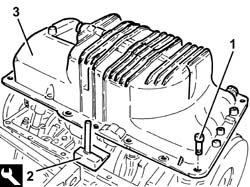
Applies to: engines: 1.9 JTD 8V; all production periods
 Removing
Removing
Position the engine on the overhauling stand 1004D40 engine - position on stand and remove .
1. Use a spanner on the moving tensioner to loosen the tension of the engine components single drive belt.
2. Remove the single drive belt.
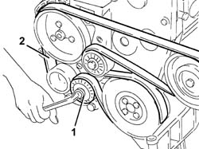
Applies to: engines: 1.9 JTD 8V; all production periods
1. Undo the bolt (1a) and remove the fixed single drive belt tensioner (1b).
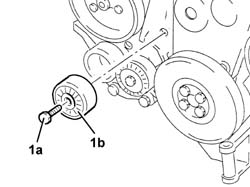
Applies to: engines: 1.9 JTD 8V; all production periods
1. Undo the bolts (1a) and remove the timing gear covers (1b).
2. Undo the bolts (2a) and remove the bracket on the engine for the reaction rod (2b).
3. Slacken the nut on the timing belt moving tensioner.
4. Remove the timing belt.
Applies to: engines: 1.9 JTD 8V; all production periods
Undo the bolts and remove the complete engine oil dipstick guide pipe.
1. Undo the side bolts fixing the pressure pump mounting.
2. Undo the connectors (2a) and (2b) using a suitable spanner and remove the pipe from the pressure pump to the fuel manifold (2c).
3. Loosen the bands (3a) and (3b) and remove the pipe from the pressure pump to the fuel return manifold pipe (3c).
Applies to: engines: 1.9 JTD 8V; all production periods
1. Undo the remaining front bolts (1a) and remove the support (1b) complete with pressure pump (1c).
Applies to: engines: 1.9 JTD 8V; all production periods
1. Disconnect the vacuum pipes from the vacuum reservoir.
2. Undo the fastenings and remove the vacuum reservoir.
Applies to: engines: 1.9 JTD 8V; all production periods
1. Slacken band (1a) and disconnect the flexible hose (1b) from the rigid coolant delivery pipe to the engine oil heat exchanger.
2. Undo the bolts securing the rigid coolant supply pipe to the engine oil heat exchanger.
Applies to: engines: 1.9 JTD 8V; all production periods
1. Loosen the band (1a) and disconnect the connector for the coolant outlet pipe from the engine oil heat exchanger on the side of the water pump rigid inlet pipe.
2. Undo bolts (2a) and remove exhaust manifold heat shield (2b).
Applies to: engines: 1.9 JTD 8V; all production periods
1. Undo the bolts (1a) fixing the water/exhaust gas heat exchanger for the E.G.R. system (1b) to the exhaust manifold.
Applies to: engines: 1.9 JTD 8V; all production periods
1. Undo the bolts (1a) and (1b), then remove the turbocharger mounting bracket (1c).
Applies to: engines: 1.9 JTD 8V; all production periods
1. Undo the bolts (1a) and (1b), then remove the engine oil return pipe from the turbocharger (1c).
Applies to: engines: 1.9 JTD 8V; all production periods
1. Undo connector (1a) and disconnect engine oil supply pipe to the turbocharger (1b), crankcase side.
Applies to: engines: 1.9 JTD 8V; all production periods
1. Undo the nuts (1a) and remove the exhaust manifold (1b) complete with turbocharger (1c).
2. Remove the gasket.
Applies to: engines: 1.9 JTD 8V; all production periods
1. Undo the bolts (1a) and remove the pipe between the E.G.R. vacuum reservoir and the turbocharger vane position actuator solenoid valve (1b).
Applies to: engines: 1.9 JTD 8V; all production periods
1. Undo the bolts (1a) and remove the tappet cover (1b), complete with seal.
2. Undo the bolts (2a) using a spanner (USAG 233 1/2 S N. 14 L) and remove the complete cylinder head (2b).
3. Remove the cylinder head gasket.
Applies to: engines: 1.9 JTD 8V; all production periods
Rotate the engine through 180° on the overhauling stand.
1. Undo the bolt connecting the crankcase sump to the intermediate shaft support.
2. Undo the front and rear bolts (2a) for the crankcase sump using the tool (2b).
| Name | Country |
|---|---|---|
2b | Key | 1.822.145.000 |
3. Undo he side bolts (3a) for the crankcase sump using the tool (3b).
| Name | Country |
|---|---|---|
3b | Key | 1.822.144.000 |
4. Using the tool (4a), cut the sealant and remove the crankcase sump (4b).
| Name | Country |
|---|---|---|
4a | Blade | 1.870.718.001 |
Applies to: engines: 1.9 JTD 16V; all production periods
Position the engine on the overhauling stand 1004D40 engine - position on stand and remove .
1. Undo the bolt fixing the protective timing cover to the water pump rigid inlet pipe.
Applies to: engines: 1.9 JTD 16V; all production periods
1. Loosen the band and disconnect the coolant outlet pipe from the water/exhaust gas heat exchanger for the E.G.R. system, heat exchanger side.
2. Undo the bolts (2a) and remove the water pump rigid inlet pipe (2b).
3. Remove the gasket.
Applies to: engines: 1.9 JTD 16V; all production periods
1. Undo the nuts (1a) and remove the exhaust manifold heat shield (1b).
Applies to: engines: 1.9 JTD 16V; all production periods
1. Undo the bolts fixing the exhaust gas outlet pipe to the water/exhaust gas heat exchanger for the E.G.R. system, E.G.R. system solenoid valve side.
Applies to: engines: 1.9 JTD 16V; all production periods
1. Tighten the bolts fixing the water/exhaust gas heat exchanger for the E.G.R. system to the cylinder head.
2. Loosen the band and disconnect the coolant inlet pipe from the water/exhaust gas heat exchanger for the E.G.R. system, heat exchanger side.
Applies to: engines: 1.9 JTD 16V; all production periods
1. Undo the bolts fixing the exhaust gas inlet pipe to the water/exhaust gas heat exchanger for the E.G.R. system, exhaust manifold side.
2. Remove the EGR system water/exhaust valve heat exchanger.
3. Remove the gaskets.
Applies to: engines: 1.9 JTD 16V; all production periods
1. Undo the bolts securing the engine oil return pipe from the turbocharger, engine crankcase side.
Applies to: engines: 1.9 JTD 16V; all production periods
1. Undo connector (1a) and disconnect engine oil supply pipe to the turbocharger (1b), crankcase side.
Applies to: engines: 1.9 JTD 16V; all production periods
1. Undo the nuts (1a) and remove the exhaust manifold (1b) complete with turbocharger (1c).
2. Remove the exhaust manifold gasket.
Applies to: engines: 1.9 JTD 16V; all production periods
1. Release the electrical wiring from the band on the timing cover.
2. Disconnect the electrical connection for the cam angle sensor.
| Name | Connector |
|---|---|---|
1 | Timing sensor. |
3. Disconnect the electrical connections from the injectors.
| Name | Connector |
|---|---|---|
3 | Injector |
4. Undo the cable duct fixing bolts.
Applies to: engines: 1.9 JTD 16V; all production periods
1. Releasethe electrical wiring from the bands fastening it to the engine coolant supply reservoir coolant return pipe.
2. Disconnect the electrical connections from the heater plugs.
| Name | Connector |
|---|---|---|
2 | Heater plug |
3. Disconnect the electrical connection from the fuel pressure sensor.
| Name | Connector |
|---|---|---|
3 | Fuel pressure sensor |
Applies to: engines: 1.9 JTD 16V; all production periods
1. Disconnect the electrical connection from the excess pressure sensor.
| Name | Connector |
|---|---|---|
1 | Turbocharging sensor |
2. Release the electrical wiring from the securing band.
3. Disconnect the electrical connection from the fuel pressure regulator.
| Name | Connector |
|---|---|---|
3 | Fuel pressure regulator |
Applies to: engines: 1.9 JTD 16V; all production periods
1. Disconnect the electrical connection from the E.G.R. valve.
| Name | Connector |
|---|---|---|
1 | EGR solenoid |
Applies to: engines: 1.9 JTD 16V; all production periods
1. Disconnect the electrical connection from the engine oil pressure warning light switch.
| Name | Connector |
|---|---|---|
1 | Engine oil pressure sensor |
Applies to: engines: 1.9 JTD 16V; all production periods
Remove the engine wiring.
1. Loosen the band and disconnect the engine oil vapour recovery pipe from the engine oil filler, then release it from the retaining band.
2. Loosen the band and disconnect the oil vapour recovery pipe from the engine crankcase.
3. Loosen the band and disconnect the condensation oil recirculation pipe from the crankcase sump.
4. Undo the bolts (4a) and remove the bracket (4b) complete with engine oil vapour separator (4c) and pipes.
Applies to: engines: 1.9 JTD 16V; all production periods
1. Undo the bolts (1a) and remove the crankshaft pulley (1b).
2. Undo the bolt (2a) and remove the single drive belt fixed tensioner (2b).
Applies to: engines: 1.9 JTD 16V; all production periods
1. Undo the bolts (1a) and remove the timing gear covers (1b).
Applies to: engines: 1.9 JTD 16V; all production periods
1. Undo the bolts (1a) and remove the bracket on the engine for the reaction rod (1b).
Applies to: engines: 1.9 JTD 16V; all production periods
1. Loosen the nut securing the timing belt mobile tensioner.
2. Prise off and remove the timing belt.
Applies to: engines: 1.9 JTD 16V; all production periods
1. Loosen the band and disconnect the coolant return pipe from the engine coolant reservoir, thermostat side.
Applies to: engines: 1.9 JTD 16V; all production periods
1. Loosen the band and disconnect the coolant outlet pipe from the cylinder head, engine coolant return pipe to the coolant reservoir side.
2. Undo the bolts (2a) and remove hose (2b) carrying coolant to the coolant supply reservoir.
Applies to: engines: 1.9 JTD 16V; all production periods
1. Disconnect the pipe from the injectors to the fuel return manifold, fuel return manifold side.
2. Loosen the band and disconnect the pipe from the pressure pump to the fuel return manifold, fuel return manifold side.
3. Undo the bolts (3a) and remove the fuel return manifold (3b).
Applies to: engines: 1.9 JTD 16V; all production periods
1. Undo the connectors (1a), (1b) and remove the pipe from the pressure pump to the fuel manifold (1c).
2. Manually push springs (2a) and disconnect the pipe from the injectors to the fuel recovery manifold (2b), injectors side and remove it.
3. Undo the connectors (3a), (3b) and remove the pipes from the fuel manifold to the injectors (3c).
4. Undo the bolts (4a) and remove the single fuel manifold pipe (4b) complete with fuel pressure sensor (4c).
Applies to: engines: 1.9 JTD 16V; all production periods
1. Undo the bolts (1a) and remove the power assisted steering pump/alternator protection (1b).
Applies to: engines: 1.9 JTD 16V; all production periods
1. Undo the bolts (1a) and remove the power steering pump pulley (1b).
Applies to: engines: 1.9 JTD 16V; all production periods
1. Undo the bolts (1a) and remove the power assisted steering pump (1b).
2. Undo the front bolt fixing the pressure pump support.
Applies to: engines: 1.9 JTD 16V; all production periods
1. Undo the bolts (1a) and remove the pressure pump support (1b) complete with pressure pump (1c).
Applies to: engines: 1.9 JTD 16V; all production periods
1. Undo the nuts fastening the injector brackets
2. Remove the injectors (2a) complete with brackets using the tool (2b).
Applies to: engines: 1.9 JTD 16V; all production periods
| Name | Country |
|---|---|---|
2b | Extractor | 1.870.897.300 |
Applies to: engines: 1.9 JTD 16V; all production periods
1. Undo the bolts (1a) and remove the camshaft housing assembly (1b).
2. Remove the gasket.
3. Remove the valve rocker arms.
Applies to: engines: 1.9 JTD 16V; all production periods
1. Undo the bolts (1a) and remove the air chamber assembly (1b).
Remove the gasket.
Applies to: engines: 1.9 JTD 16V; all production periods
1. Undo the bolt (1a) and remove the timing gear cover (1b).
Applies to: engines: 1.9 JTD 16V; all production periods
1. Undo and remove the heater plugs.
Applies to: engines: 1.9 JTD 16V; all production periods
1. Undo the bolts (1a) and remove the lower cylinder head assembly (1b).
2. Remove the gasket.
3. Remove the locating bushes
Applies to: engines: 1.9 JTD 16V; all production periods
1. Fit the flywheel lock.
| Name | Country |
|---|---|---|
1 | Counter-torque | 1.860.846.001 |
Applies to: engines: 1.9 JTD 16V; all production periods
1. Undo the (left hand thread) bolt (1a) and remove the drive pulley (1b).
Applies to: engines: 1.9 JTD 16V; all production periods
1. Undo the bolts (1a) and remove the engine flywheel (1b).
2. Remove the flywheel lock.
| Name | Country |
|---|---|---|
2 | Counter-torque | 1.860.846.001 |
Applies to: engines: 1.9 JTD 16V; all production periods
1. Undo the bolts (1a) and remove the engine flywheel protection (1b).
Applies to: engines: 1.9 JTD 16V; all production periods
Rotate the engine throughi 180° on the overhauling stand.
1. Undo the front and rear bolts (1a) securing the crankcase sump using tool (1b).
| Name | Country |
|---|---|---|
1b | Spanner | 1.860.833.001 |
2. Undo the side bolts (2a) securing the crankcase sump using tool (2b).
| Name | Country |
|---|---|---|
2b | Spanner | 1.860.834.001 |
3. Use the tool to cut the crankcase sump sealant.
| Name | Country |
|---|---|---|
3 | Blade | 1.870.718.000 |
4. Remove the crankcase sump.
Topics linked from this page (18)
- 1004D40 engine - position on stand and remove
- A30 Ignition coil (cyl. 1)
- A40 Heater plug
- C40 Earth on engine ( ENGINE )
- C40B Earth on engine ( ENGINE )
- K30 Engine oil pressure sensor (switch)
- K36 Engine temperature sender unit
- K46 RPM sensor
- K47 Timing sensor.
- K50 Detonation sensor - 1
- K51 Knock sensor - 2
- K82 Turbocharging sensor
- K83 Fuel pressure sensor
- L20 Air conditioning compressor engagement electro-magnet
- L30 EGR solenoid
- N70 Injector (cyl. 1)
- N75 Throttle body actuator
- N77 Fuel pressure regulator